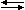
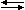

В атоме дейтерия (2H ), с одним неспаренным электроном, одним неспаренным протоном и одним неспаренным нейтроном полный электронный спин = 1/2, а полный ядерный спин = 1.
Две или более частиц со спинами противоположных знаков могут объединяться в пары, чтобы устранить наблюдаемые проявления спина. Примером может служить гелий.
В ядерном магнитном резонансе важны неспаренные ядерные спины.
Для водорода γ = 42.58 МГц / Тл.
 ЯМР можно проводить только на изотопах, чье естественное содержание достаточно велико для обнаружения. Некоторые из ядер, обычно используемых в ЯМР, перечислены ниже.
ЯМР можно проводить только на изотопах, чье естественное содержание достаточно велико для обнаружения. Некоторые из ядер, обычно используемых в ЯМР, перечислены ниже.
| Ядра | Неспаренные протоны | Неспаренные нейтроны | Чистый спин | γ (МГц/Тл) |
|---|---|---|---|---|
| 1H | 1 | 0 | 1/2 | 42.58 |
| 2H | 1 | 1 | 1 | 6.54 |
| 31P | 1 | 0 | 1/2 | 17.25 |
| 23Na | 1 | 2 | 3/2 | 11.27 |
| 14N | 1 | 1 | 1 | 3.08 |
| 13C | 0 | 1 | 1/2 | 10.71 |
| 19F | 1 | 0 | 1/2 | 40.08 |
Этот протон обладает свойством, называемым спином. Представьте себе спин этого протона как вектор магнитного момента, заставляющий протон вести себя как крошечный магнит с северным и южным полюсом.
Когда протон помещается во внешнее магнитное поле, вектор спина частицы выравнивается с внешним полем, как это делает магнит. Существует конфигурация или состояние с низкой энергией, в котором полюса выровнены NSNS,
и состояние с высокой энергией NNSS.
В ЯМР и МРТ величина ν называется резонансной частотой и частотой Лармора.
Мы видели, что ν = γ B и
E = h ν, поэтому энергия фотона, необходимая для перехода между двумя спиновыми состояниями, равна
Когда энергия фотона совпадает с разницей энергий между двумя спиновыми состояниями, происходит поглощение энергии.

В эксперименте ЯМР частота фотона находится в диапазоне радиочастот (РЧ). В спектроскопии ЯМР ν составляет от 60 до 800 МГц для ядер водорода. В клинической МРТ ν обычно составляет от 15 до 80 МГц для визуализации водорода.
Эксперимент CW также может быть выполнен с постоянным магнитным полем и частотой, которая варьируется. Величина постоянного магнитного поля представлена положением вертикальной синей линии на диаграмме уровней энергии.
При комнатной температуре число спинов на нижнем энергетическом уровне, N+, немного превышает число на верхнем уровне, N-. Статистика Больцмана говорит нам, что
E — разность энергий между спиновыми состояниями; k — постоянная Больцмана, 1,3805x10-23 Дж/Кельвин; T — температура в градусах Кельвина.
При понижении температуры отношение N- /N+ также уменьшается. При повышении температуры отношение приближается к единице.
Сигнал в спектроскопии ЯМР возникает из-за разницы между энергией, поглощаемой спинами, которые совершают переход из состояния с более низкой энергией в состояние с более высокой энергией, и энергией, испускаемой спинами, которые одновременно совершают переход из состояния с более высокой энергией в состояние с более низкой энергией. Таким образом, сигнал пропорционален разнице заселенностей между состояниями. ЯМР является довольно чувствительной спектроскопией, поскольку она способна обнаруживать эти очень малые различия заселенностей. Именно резонанс, или обмен энергией на определенной частоте между спинами и спектрометром, обеспечивает ЯМР его чувствительность.
В любой момент времени магнитное поле, создаваемое спинами в каждом спиновом пакете, можно представить вектором намагниченности.
Размер каждого вектора пропорционален (N+ - N-).
Векторная сумма векторов намагниченности от всех спиновых пакетов есть чистая намагниченность. Для описания импульсного ЯМР необходимо с этого момента говорить в терминах чистой намагниченности.
Применяя традиционную систему координат ЯМР, можно сказать, что внешнее магнитное поле и вектор суммарной намагниченности в состоянии равновесия направлены вдоль оси Z.
Можно изменить чистую намагниченность, подвергая ядерную спиновую систему воздействию энергии с частотой, равной разнице энергий между спиновыми состояниями. Если в систему вложено достаточно энергии, можно насытить спиновую систему и сделать MZ=0.
Постоянная времени, описывающая, как МZ возвращается к своему равновесному значению, называется временем релаксации спиновой решетки (T1). Уравнение, описывающее это поведение как функцию времени t после его смещения, имеет вид:
Таким образом, T1 определяется как время, необходимое для изменения Z-компоненты намагниченности в e раз.
Если чистая намагниченность размещена вдоль оси -Z, она постепенно вернется в свое положение равновесия вдоль оси +Z со скоростью, определяемой Т1.
Уравнение, описывающее это поведение как функцию времени t после его смещения, имеет вид:
Время спин-решеточной релаксации (T1) — это время, необходимое для уменьшения разницы между продольной намагниченностью (MZ) и ее равновесным значением в e раз.
она будет вращаться вокруг оси Z с частотой, равной частоте фотона, что вызовет переход между двумя энергетическими уровнями спина. Эта частота называется частотой Лармора.
Постоянная времени, описывающая возврат к равновесию поперечной намагниченности, MXY, называется временем спин-спиновой релаксации, T2.
T2 всегда меньше или равно 1.
Суммарная намагниченность в плоскости XY стремится к нулю, а затем продольная намагниченность растет до тех пор, пока мы не получим
Mo вдоль Z.
Любая поперечная намагниченность ведет себя одинаково.
Поперечная составляющая вращается вокруг направления приложенной намагниченности и дефазируется. T1 управляет скоростью восстановления продольной намагниченности.
Подводя итог, можно сказать, что время спин-спиновой релаксации T2 — это время, необходимое для уменьшения поперечной намагниченности в e раз. В предыдущей последовательности процессы T2 и T1 показаны отдельно для ясности. То есть векторы намагниченности показаны полностью заполняющими плоскость XY перед тем, как снова вырасти вдоль оси Z. На самом деле оба процесса происходят одновременно, и единственным ограничением является то, что T2 меньше или равно Т1.
На распад поперечной намагниченности влияют два фактора.
1) молекулярные взаимодействия (говорят, что они приводят к чистому молекулярному эффекту T2)
2) изменения в Bo (говорят, что они приводят к неоднородному эффекту
T2
Сочетание этих двух факторов на самом деле приводит к распаду поперечной намагниченности. Объединенная постоянная времени называется звездой Т2 и обозначается символом T2*. Связь между T2 из молекулярных процессов и T2 из неоднородностей магнитного поля следующая:
Вектор намагниченности, вращающийся с частотой Лармора в лабораторной системе отсчета, кажется неподвижным в системе отсчета, вращающейся вокруг оси Z. Во вращающейся системе отсчета релаксация намагниченности MZ к ее равновесному значению выглядит так же, как и в лабораторной системе отсчета.
Поперечный вектор намагниченности, вращающийся вокруг оси Z с той же скоростью, что и вращающаяся рамка, будет казаться неподвижным во вращающейся системе отсчета.
Вектор намагниченности, движущийся быстрее вращающейся рамки, вращается по часовой стрелке вокруг оси Z.
Вектор намагниченности, движущийся медленнее вращающейся рамки, вращается против часовой стрелки вокруг оси Z.
В образце есть спиновые пакеты, движущиеся быстрее и медленнее вращающейся рамки. В результате, когда средняя частота образца равна вращающейся рамке, дефазировка MX'Y' выглядит следующим образом.
Переменный ток создаст магнитное поле, направление которого меняется.
В системе отсчета, вращающейся вокруг оси Z с частотой, равной частоте переменного тока, магнитное поле вдоль оси X' будет постоянным, как и в случае постоянного тока в лабораторной системе.
Это то же самое, что и перемещение катушки вокруг вращающейся системы координат с частотой Лармора. В магнитном резонансе магнитное поле, создаваемое катушкой, пропускающей переменный ток с частотой Лармора, называется магнитным полем B1 Когда переменный ток через катушку включается и выключается, он создает импульсное магнитное поле B1 вдоль оси X'.
Спины реагируют на этот импульс таким образом, что вызывают вращение вектора чистой намагниченности вокруг направления приложенного поля B1. Угол вращения зависит от продолжительности действия поля τ, и его величины B1.
В наших примерах предполагается, что τ намного меньше T1 и T2.
Импульс 90o — это импульс, который поворачивает вектор намагниченности по часовой стрелке на 90 градусов вокруг оси X'.
Импульс 90o поворачивает равновесную намагниченность вниз к оси Y'.
В лабораторной системе отсчета равновесная намагниченность спиралевидно опускается вокруг оси Z к плоскости XY.
Теперь понятно, почему вращающаяся система отсчета полезна при описании поведения намагниченности в ответ на импульсное магнитное поле.
Импульс 180o повернет вектор намагниченности на 180 градусов.
Импульс 180o повернет равновесную намагниченность вниз вдоль оси -Z.
Чистая намагниченность при любой ориентации будет вести себя согласно уравнению вращения. Например, вектор чистой намагниченности вдоль оси Y' окажется вдоль оси -Y', если на него подействует импульс
B1 на 180o вдоль оси X'.
Вектор суммарной намагниченности между X' и Y' окажется между X' и -Y' после приложения 180-градусного импульса B1
вдоль оси X'.
Матрица поворота (описанная как преобразование координат в #2.6 Главы 2) также может использоваться для прогнозирования результата поворота. Здесь θ — угол поворота вокруг оси X', [X', Y', Z] — начальное положение вектора, а [X'', Y'', Z''] — положение вектора после поворота.
Изменяющиеся во времени поля на частоте Лармора вызывают переходы между спиновыми состояниями и, следовательно, изменение
MZ. Этот экран изображает поле зеленого водорода на молекуле воды, вращающееся вокруг внешнего поля Bo и магнитного поля синего водорода.
Обратите внимание, что поле, испытываемое зеленым водородом, является синусоидальным.
В образце молекул существует распределение частот вращения. Только частоты на частоте Лармора влияют на T1. Поскольку частота Лармора пропорциональна Bo, T1будет, следовательно, изменяться как функция напряженности магнитного поля.
В общем случае T1обратно пропорциональна плотности молекулярных движений на частоте Лармора.
Распределение частоты вращения зависит от температуры и вязкости раствора. Поэтому Т1 будет изменяться в зависимости от температуры.
При частоте Лармора, обозначенной νo,
T1 (280 K ) < T1 (340 K). Температура человеческого тела не меняется достаточно сильно, чтобы оказать существенное влияние на Т1. Однако вязкость существенно меняется от ткани к ткани и влияет на Т1, как показано на следующем графике молекулярного движения.
Флуктуирующие поля, которые возмущают энергетические уровни спиновых состояний, вызывают дефазировку поперечной намагниченности. Это можно увидеть, изучив график Bo испытываемый красными водородами на следующей молекуле воды.
Число молекулярных движений, меньших и равных частоте Лармора, обратно пропорционально Т2.
В целом, время релаксации увеличивается с увеличением Bo, поскольку в случайных движениях молекул присутствует меньше частотных компонентов, вызывающих релаксацию.
 ) + B() 
A() + B()
) + B() 
A() + B()
Двунаправленная стрелка указывает на то, что реакция обмена обратима.
Разница энергий между верхним и нижним энергетическими состояниями A и B должна быть одинаковой для того, чтобы произошел обмен спинами. В микроскопическом масштабе спин в верхнем энергетическом состоянии (B) испускает фотон, который поглощается спином в нижнем энергетическом состоянии (A). Таким образом, B оказывается в нижнем энергетическом состоянии, а A — в верхнем.
Обмен спинами не повлияет на T1, но повлияет на T2. T1 не затронут, поскольку распределение спинов между верхним и нижним состояниями не изменяется. T2 будет затронут, поскольку фазовая когерентность поперечной намагниченности теряется во время обмена.
Другая форма обмена называется химическим обменом. При химическом обмене ядра A и B принадлежат разным молекулам. Рассмотрим химический обмен между водой и этанолом.
Здесь водород B воды заканчивается на этаноле, а водород A на этаноле заканчивается на воде в прямой реакции. Существует четыре сценария для ядерного спина, представленные четырьмя уравнениями.
Химический обмен повлияет как на Т1 так и на T2. Теперь Т1затронут, поскольку энергия передается от одного ядра к другому. Например, если в верхнем состоянии A больше ядер, а в B нормальное распределение Больцмана, обмен заставит избыточную энергию перейти из A в B. Эффект заставит T1 казаться меньше. T2 затронут, поскольку фазовая когерентность поперечной намагниченности не сохраняется во время химического обмена.
При правильной интеграции уравнения Блоха дадут компоненты намагничивания X', Y' и Z как функцию времени.
Авторские права © 1997-2017 JP Hornak.
Все права защищены.